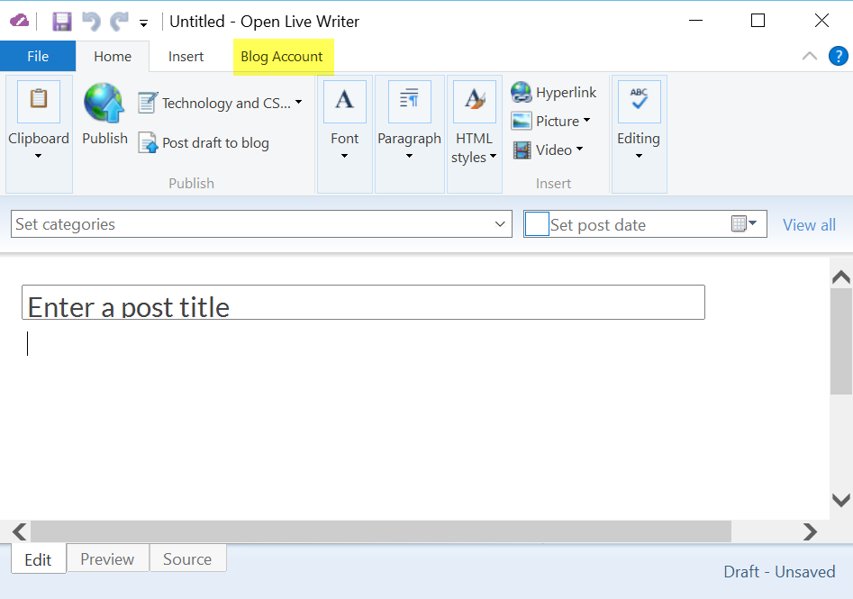
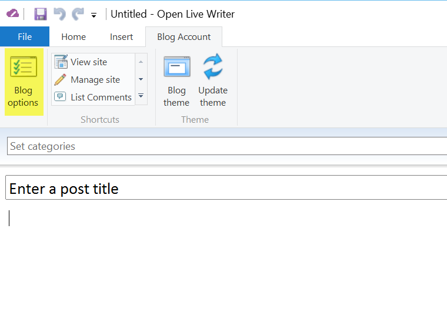
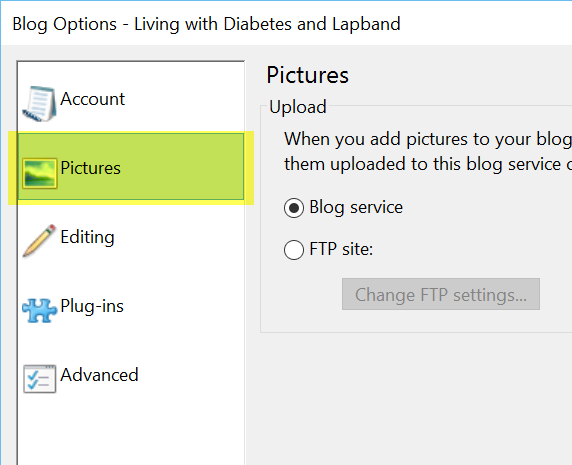
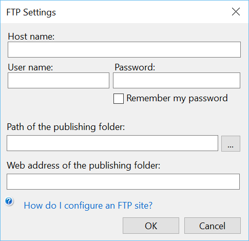

Setting up FTP
To be able to access photos hosted at an FTP site,
you'll need to set up FTP in Open Live Writer
You will need the following information:
- FTP Host name -- usually ftp.hostname.com
- User name -- usually your ftp user name
- Password -- FTP password
- Path of the publishing folder: -- often /html/images but can be any folder. Note, you can get this from OpenLiveWriter once you have enterd the above information.
- Web address of the publishing folder: -- often http://www.hostname.domain/images/
Once you have these, you can enter the settings by going to:
- Clicking on Blog Account

- Then click on Blog Options

- Click on Pictures

- Click on the FTP site:

- Then fill in the information you have already gathered.